Infinity Grove · Revisão de UI
Versão do jogo
O rótulo div.game-version aparece em todas as telas (carregamento, abertura, login, batalha e Mochila) no canto inferior direito da janela, a 8 px da direita e 4 px de baixo, fora do canvas, em uma única linha, pergaminho a 60 % de opacidade e mais apagado que qualquer texto do HUD. Em 1280×720 fica na faixa direita, em 390×844 na faixa inferior e em 1024×768 na faixa sob a barra de batalha, sem tocar o anel da barra nem o botão Farm boss. Nenhum achado. Em desenvolvimento lê v0.0.0 (a versão 0.4.1 entra no commit de release); avaliei o visual, não o número.
6
telas e estados verificados
11
capturas (desktop + celular)
0
achados de severidade alta
0
achados médios e baixos
Fidelidade à spec
- ✓O rótulo lê
v<versão>no canto inferior direito em todas as telasGV-01..GV-05, GV-09 - ✓Em 1280×720 fica na faixa direita; em 390×844, na faixa inferior; nunca sobre o canvas
GV-10, GV-11 - ✓Em 1024×768 fica sob a barra de batalha, com folga visível acima, sem tocar o anel nem o botão Farm boss
GV-09 - ✓Figtree 600 de 12 px, pergaminho do tema Grove a 60 %, sombra suave, uma linha, sem corte
GV-12 - ✓Mais apagado que todo texto do HUD e ainda legível (desktop e celular)
GV-12 - ✓Não cobre nem bloqueia a Mochila aberta; texto não é inglês nem traduzível (é um número de versão)
GV-13, AD-007
Capturas
Carregamento
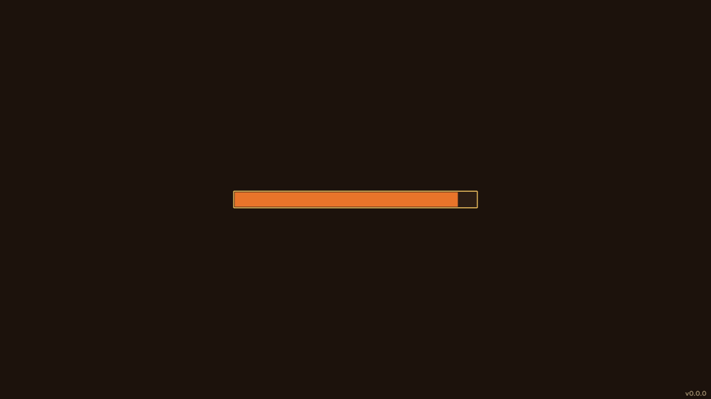
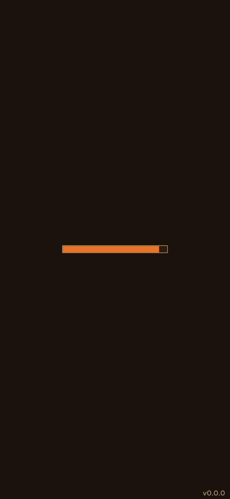
Abertura
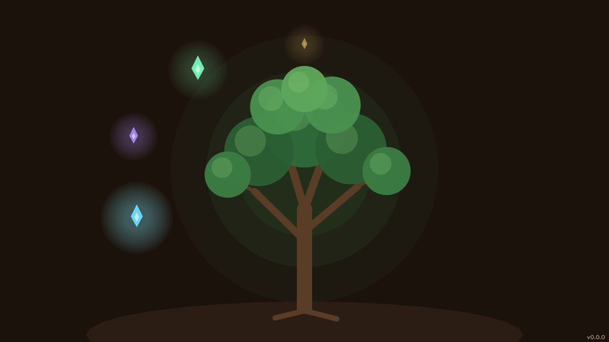
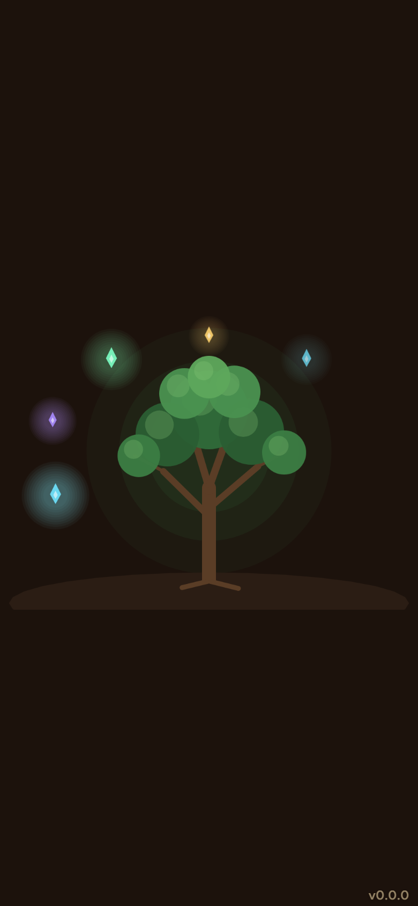
Login
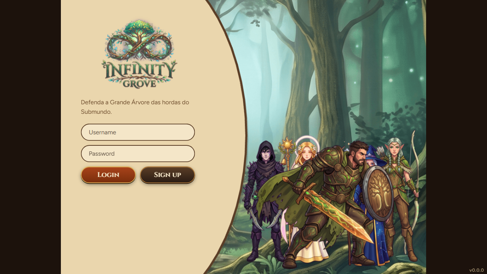
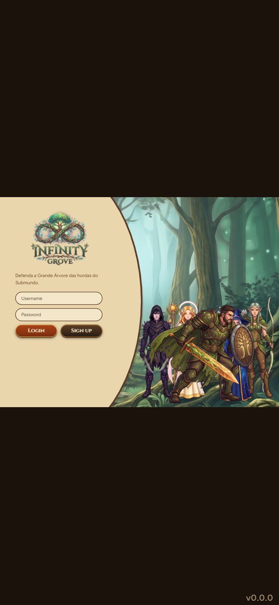
Batalha
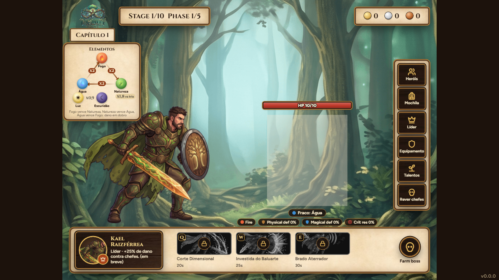
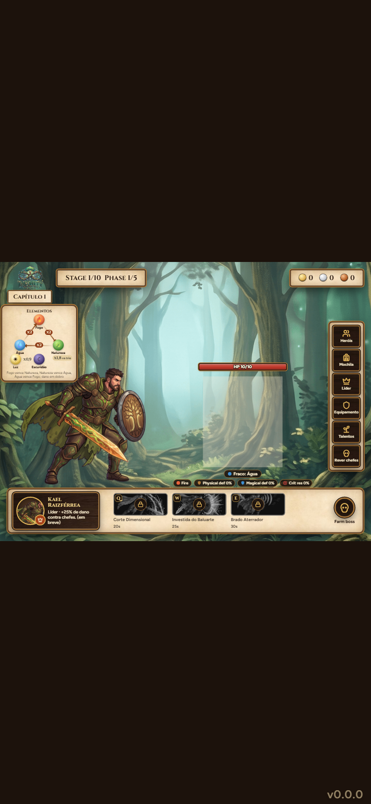
Batalha com a Mochila aberta
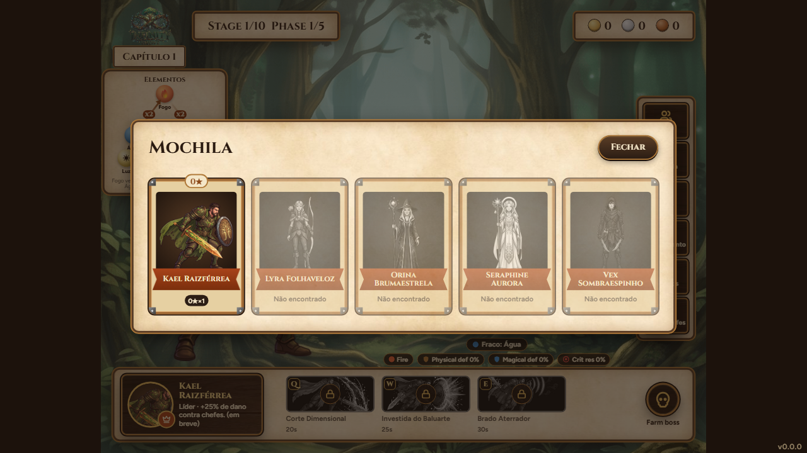
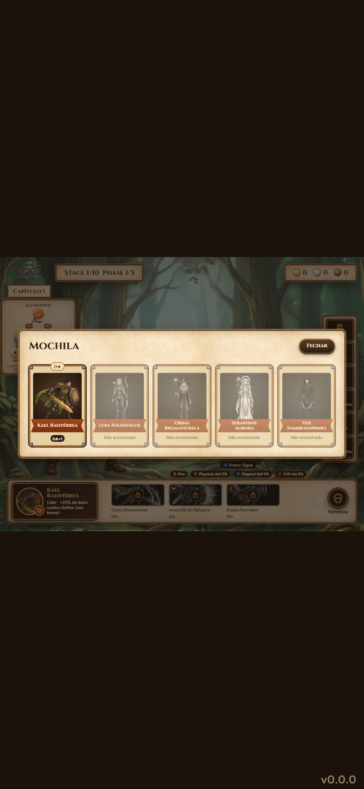
Batalha em 4:3 (1024×768)
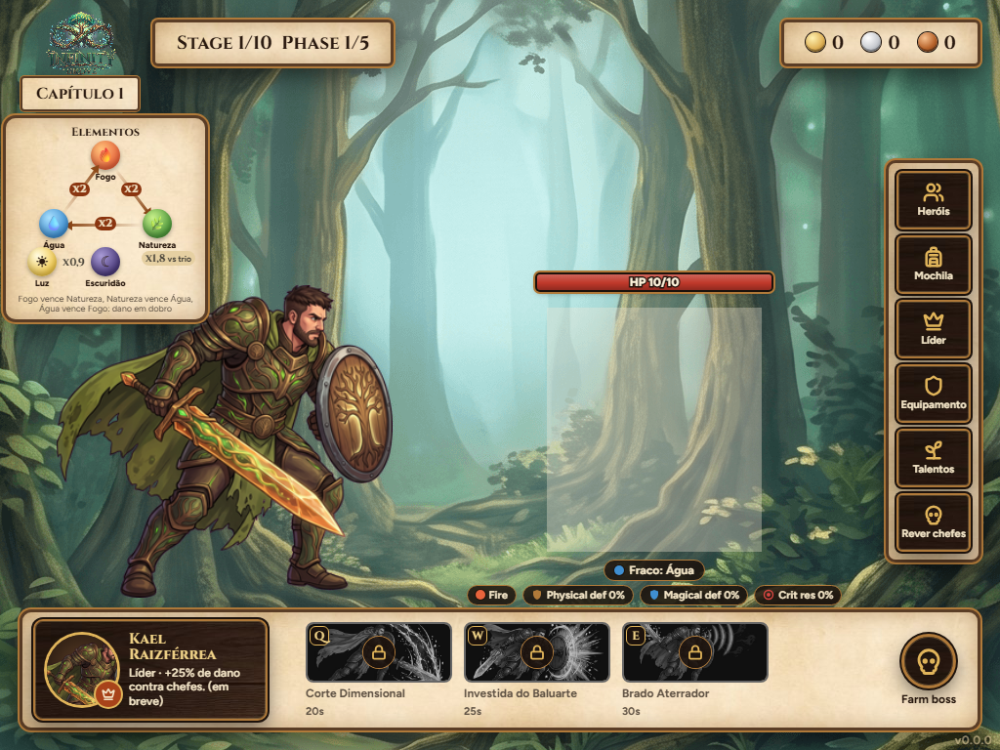
Achados
Nenhum achado.
Sugestões
- ✦Em 1024×768 o rótulo fica sobre a arte clara da floresta; a leitura é boa, mas é a situação de menor contraste. Se o jogador reclamar, subir a opacidade de 0,6 para 0,7 em
.game-version(game/public/style.css) mantém a hierarquia. - ✦No celular (390×844) o rótulo de 12 px fica maior que o texto do HUD, que é reduzido junto com o canvas. Segue a spec (tamanho fixo), mas vale reavaliar se aparecer reclamação de ruído visual.
Console e recursos
- ✓Nenhum 404, erro de página ou erro de console. Só aparece o aviso do driver do Chrome
GPU stall due to ReadPixels, causado pela captura de tela, não pelo jogo.